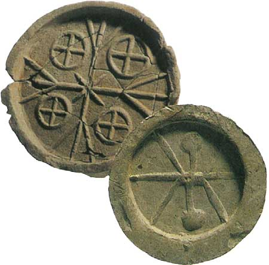
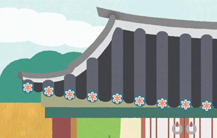
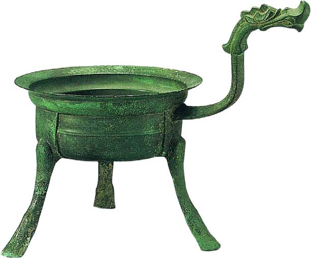
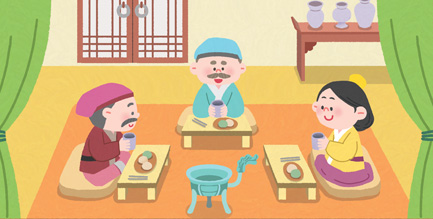
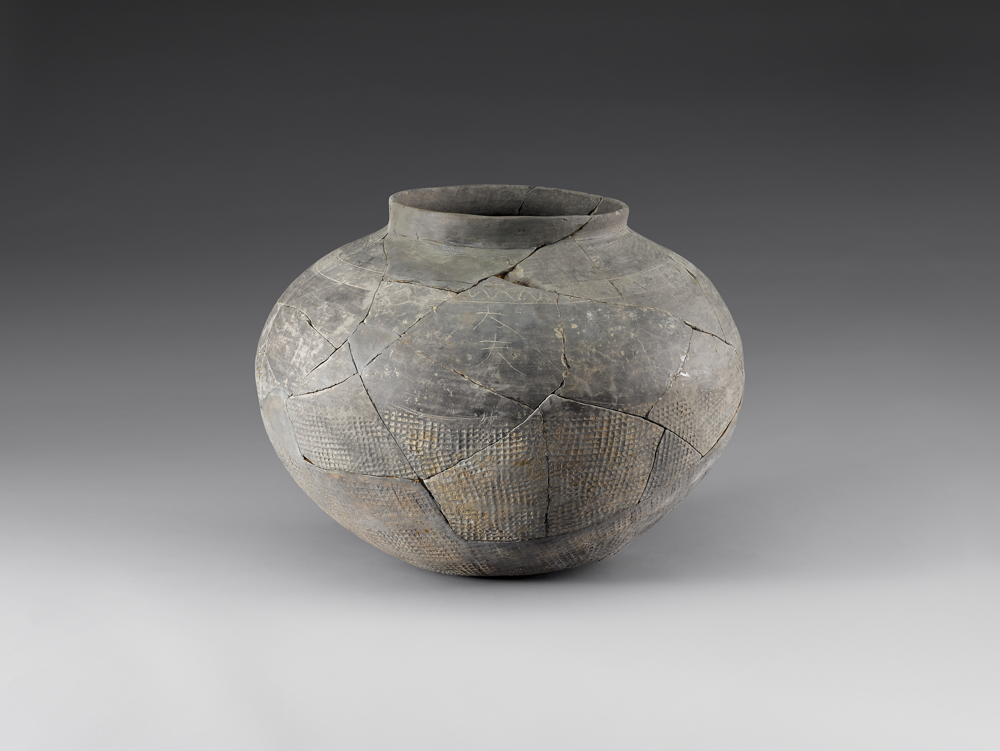
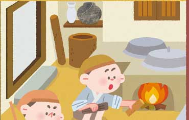
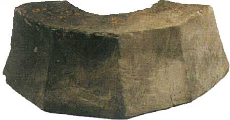
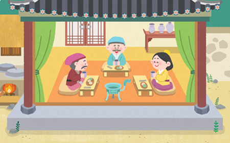

유물을 통해 백제 사람들의 생활 모습 살펴
보기

해당 유물이 실제로 어떻게 쓰였는지 그림에서 찾아 써 보자.
예시답안
-
풀이나 십자 같은 무늬가 새겨진 수막새기와의 끝 부분을 마무리하고 장식하는 데 사용한 것 같습니다.
-
청동 자루솥사람들이 청동 자루솥 근처에서 차를 마시고 있습니다. 청동 자루솥은 물을 데우는 데 사용한 것 같습니다.
-
토기식재료를 보관하거나 요리를 하는 데 사용한 것 같습니다.
-
주춧돌건물 기둥을 받치는 데 사용한 것 같습니다.